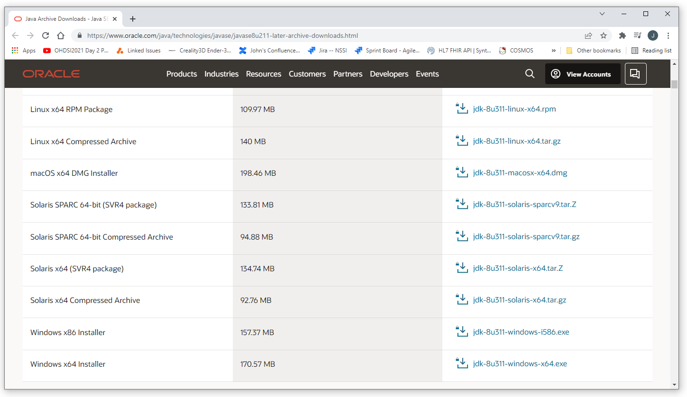

Install Java
The current version of our application was developed and tested using Java 1.8.
This is not the most current version of Java.
More current version of Java are not reverse compatable with Java 1.8.
Java 1.8 can be downloaded from the Java web site here:
https://www.oracle.com/java/technologies/javase/javase8u211-later-archive-downloads.html
